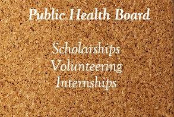

Public Health Board curates opportunities in the Public Health field for young professionals.
It is your go to place to find verified volunteer, internship and scholarship positions and other opportunities.
Actually, music gave me the support when I needed it. I would never have gone to college unless I’d gotten a piano scholarship. And now I’m so glad I got to learn to play the cello, which is a different experience, you’re flexing a different muscle, but it’s beautiful because it is music
Jamie Foxx
Scholarships are important to career and educational progress. They provide an opportunity for many people to earn an education.
Without assistance from an outside source, students may have trouble paying for the degree they need in order to enter the workforce and become contributing members of society.
The path to higher education is not always easy, and many students need help along the way
Volunteering is one of the ways to start and or build your career in public health.
It is an act of freewill by a person or group of persons to give their time and labour freely for community service.
Through volunteering you can learn new skills, build upon already existing skills, and even network with other professionals.
All these will help in advancing one's career either for an entry level role or a promotion.
An internship is a period of work experience offered by an organization for a limited period of time.
They are typically undertaken by students and graduates looking to gain relevant skills and experience in a particular field.
An internship can be used to build a professional network that can assist with letters of recommendation or lead to future employment opportunities.